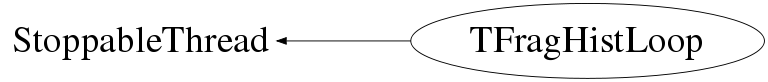

class TFragHistLoop: public StoppableThread
Function Members (Methods)
public:
protected:
| virtual bool | Iteration() |
private:
| virtual Bool_t | CheckTObjectHashConsistency() const |
| void | CloseFile() |
| void | OpenFile() |
| TFragHistLoop(string name) |
Data Members
public:
| static thread | StoppableThread::fStatusThread | |
| static bool | StoppableThread::fStatusThreadOn |
protected:
| atomic_long | StoppableThread::fInputSize | number of items in the input (queue), only updated within Iteration(), so not |
| atomic_size_t | StoppableThread::fItemsPopped | number of items popped from input queue |
| string | StoppableThread::fName | |
| static map<string,StoppableThread*> | StoppableThread::fThreadMap |
private:
| TCompiledHistograms | fCompiledHistograms | |
| shared_ptr<ThreadsafeQueue<shared_ptr<const TFragment> > > | fInputQueue | |
| TFile* | fOutputFile | |
| string | fOutputFilename |
Class Charts



Function documentation
TFragHistLoop* Get(string name = "")
TFragHistLoop(string name)
void ClearQueue()
bool Iteration()
void ClearHistograms()
void OpenFile()
void CloseFile()
void Write()
void LoadLibrary(string library)
std::string GetLibraryName() const
TList* GetObjects()
TList* GetGates()
void SetOutputFilename(const string& name)
std::string GetOutputFilename() const
void AddCutFile(TFile* cut_file)
std::shared_ptr<ThreadsafeQueue<std::shared_ptr<const TFragment>>>& InputQueue()
{ return fInputQueue; } TFragHistLoop(string name)